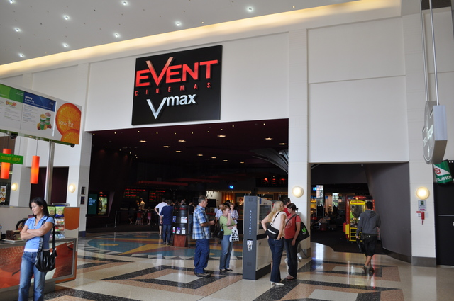
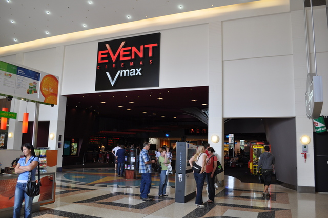

This article will provide information on the top places to visit within the castle hill region, places to eat, shop and enjoy will be provided and examples include, event cinemas and castle hill metro station. These places are a must visit for families, teens and anyone who would like to sit and relax.

 

Castle Hill towers, is a great shopping center filled with some of the showrooms of top brands such as nike, myer and david jones, here at Towers you'll find all the brands and products at your finger tips
The cinemas are a great place to enjoy your favourite movies. Event cinemas at castle hill is a large movie theater where you can watch blockbuster movies in 4D, and recliner seats. The cinemas are also near the food court located next to the cinemas.

Castle Hill library is located in front of Castle Hill shopping center and next to the Castle Hill police station. The library attracts many visitors including many students from Castle Hill High School which is located nearby the library.
The Castle Hill metro station is located in front of Castle Hill shopping centre, with access to the station directly through the shopping centre. Castle Hill metro station is also the best way to travel to the city.